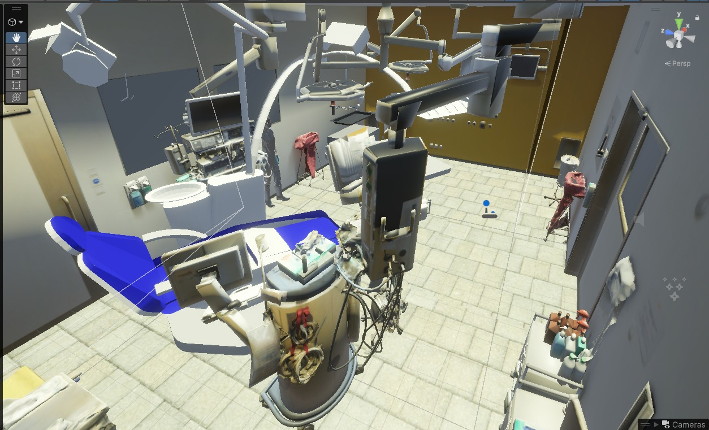

Elementos del entorno

1 2 3 4 5 6- 1
Sillón operativo
Zona principal de trabajo dentro de la escena.
- 2
Módulo de instrumentos
Controles, charola y brazo articulado junto al usuario.
- 3
Objetos operativos
Lámparas, monitores y soportes de atención.
- 4
Botes de residuos
Contenedores ubicados en el consultorio para la disposición.
- 5
Mobiliario operativo
Gabinetes y superficies de apoyo del lado derecho.
- 6
Carro de insumos
Área de material y apoyo complementario.